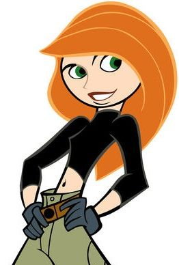
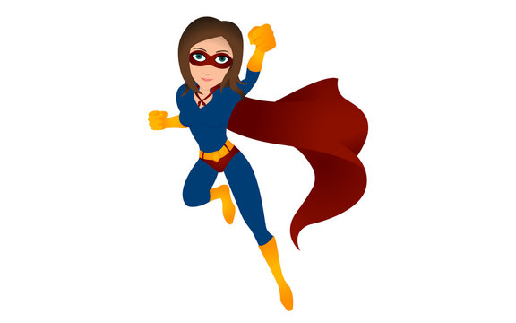
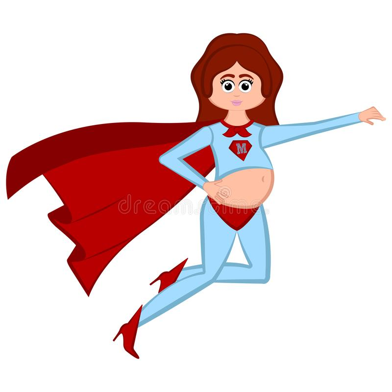
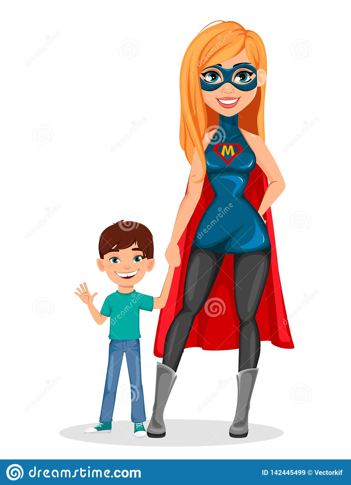
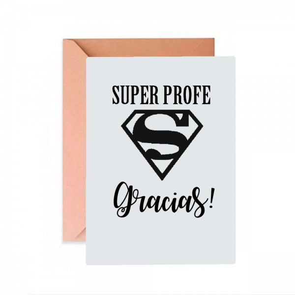

Y las Egresadas con Superpoderes HTML y CSS






Fueron 2 meses de mucho aprendizage, de entrar al mundo maravilloso de la programación, muchas veces preguntandonos..."Cómo era que..."
donde nos reímos, a veces nos enojamos con el codigo que se rompía,
pero de escribir un par de lineas en html, hoy podemos hacer cosas increibles diseñando paginas web.
 Y eso gracias al esfuerzo y las ganas de cada una, pero nada de eso seria posible sin ustedes.
Y eso gracias al esfuerzo y las ganas de cada una, pero nada de eso seria posible sin ustedes.
Por eso les dejamos ese sencillo recuerdo, para constar que les agradecemos mucho por bancarnos,
esas chicas increibles, algo ansiosas a veces,
Pero con su incentivo y guía, llegamos a completar esa primera etapa en Desarrollo Web,
y ahora vamos por más. Gracias por ese tiempo, lo pasamos hermoso, y les vamos a extrañar
.
Un gran abrazo,
Y ahora a celebrar!
(propongo que sea en Mendoza, jajaja...) -hacemos una encuesta con un super formulario para elegir la ciudad -
"> Mendoza
Nahue, Ivana;

Vote por la Ciudad para Celebrar: (sin fecha definida por ahora)